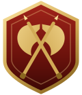

A Horde Guild of WoW: Forever
The Kor'kron Guard
We do not scream over the din of battle. We lock shields, we execute the Warchief's will, and we finish the war.
The Charter
Blood and Honor
The Third War is over, but peace is an illusion. Warchief Thrall has carved out a home for the Horde in the harsh red dust of Durotar, but survival is a daily struggle. To protect this fragile new nation from internal corruption, external threats, and the encroaching Alliance, Thrall established an elite force of enforcers and shock troops, and placed them under the command of High Overlord Varok Saurfang.
We are that force.
We are the veterans. We are the survivors of the First, Second, and Third Wars. We have seen the demonic blood-curse tear our people apart, and we have fought too hard for this new home to see it lost to stupidity, ego, or lack of discipline.
Every Member Is Kor'kron
The Three Pillars
Three deployments, one tabard. Raid, ride, or keep the fire: every road leads to the same Guard.
The Vanguard
The Raid Force
“The tip of the Warchief's spear.”
Molten Core, Blackwing Lair, Onyxia, Zul'Gurub, Ahn'Qiraj, Naxxramas. We march with iron discipline, first to take the field and last to yield ground.
Led by the Warmasters
The Outriders
The PvP Contingent
“The shield of the frontier.”
Alterac Valley, Warsong Gulch, Arathi Basin, and every road the Alliance thinks unguarded. We ride to break their formations and remind them whose land this is.
Led by the Blood Guards
The Hearth
Social & Support
“The blood of the Horde.”
Crafters, Quartermasters, scouts and resting veterans. Dungeon nights, alt runs and stories by the fire in Orgrimmar. You don't need to swing a sword every night to belong.
Led by the Hearth-Callers
The Guild Calendar
Upcoming Musters
Raid nights, battleground pushes, Hearth nights and news from the front.
Those Who Wear the Tabard
Records of the Guard
Every Kor'kron has a story. Here are the ones set down so far.
The Quartermaster's Stores
Guild Tools
Addons forged for the Guard. Free, and kept up to date for you.
Kor'kron Loot
Guild soft-reserve loot: two reserves per raider, reserve roll-offs, Main Spec over Off Spec, disenchanting, and a guild loot ledger. Type /kl to open.
Kor'kron Roster
The guild roster with shared professions and recipe lists, a guild crafter search, and PvP standings. Type /kr to open.
Kor'kron Heal Helper
For healers: click-cast healer frames, a "which rank?" helper for mana-efficient healing, and cleanse alerts. Type /khh to open.
Out of Character
Join the Guard
This lore mirrors who we are as players. We are older gamers, veterans of classic MMOs, and working adults. We love the heavy, immersive feel of the Horde, and we don't follow the toxic, ego-driven culture that plagues modern gaming.
When we raid, we raid: we show up focused, cut the chatter during boss pulls, and respect each other's time so we can clear the dungeon and go to bed. When we PvP, we do it to have a laugh and blow off steam. And when we aren't doing either, we just want a mature, drama-free Hearth to hang out in.
If you understand the value of discipline in a raid, patience with your brothers-in-arms, and honor in the community, the Guard has a tabard for you.